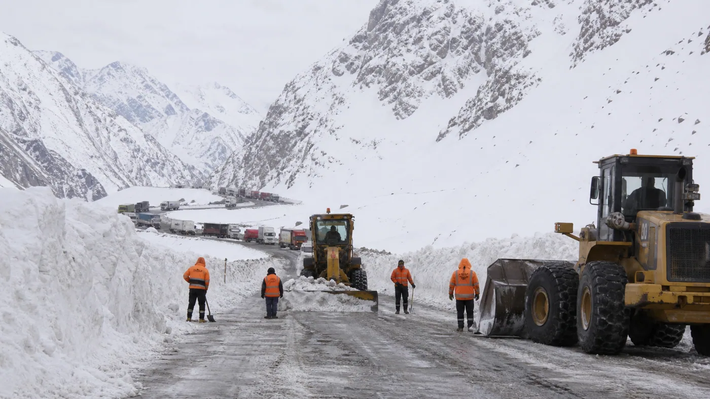

El Sistema Integrado Cristo Redentor atravesó en agosto de 2026 una de sus operaciones invernales más exigentes. Después de permanecer cerrado durante más de un mes por acumulaciones excepcionales de nieve, el corredor fue habilitado por etapas y permitió el desplazamiento de más de 7.400 transportes de carga en cinco días. La normalización duró poco: un nuevo pronóstico adverso obligó a cerrar otra vez el túnel internacional el 24 de agosto.
La secuencia recuerda una condición básica del transporte entre Argentina y Chile: en invierno, la apertura no depende únicamente de que la calzada esté despejada. También intervienen el viento, la visibilidad, el riesgo de avalanchas, el hielo, la capacidad de los complejos fronterizos y la coordinación de ambos países.
Un temporal histórico sobre la Ruta Nacional 7
Vialidad Nacional informó que el cierre preventivo había comenzado el 14 de julio. Las nevadas afectaron unos 80 kilómetros entre Punta de Vacas y Las Cuevas y llegaron a cubrir Uspallata. En determinados puntos, la acumulación alcanzó cuatro metros, el mayor registro señalado para la zona desde 2008.
Los equipos trabajaron de manera permanente dentro del Plan Integral de Mantenimiento Invernal. El operativo no consistió solo en empujar nieve: fue necesario despejar, ensanchar corredores, controlar laderas, evaluar avalanchas y sostener campamentos en altura. Aunque el 9 de agosto se había logrado llegar hasta la boca del túnel, los fuertes vientos todavía impedían habilitar el recorrido completo.

La reapertura se hizo por etapas
La reapertura comenzó el 18 de agosto con un esquema controlado. Diario UNO informó que en las primeras 48 horas se liberaron 2.870 camiones que aguardaban del lado argentino. Luego se habilitó el tránsito de cargas desde Chile hacia Argentina, con franjas horarias y sentidos definidos para ordenar el flujo.
El 21 de agosto, la Coordinación del Centro de Frontera comunicó la continuidad del tránsito de camiones desde Chile hacia Argentina entre las 9 y las 21 de nuestro país. Para el 22 y 23 se proyectó la circulación habitual en ambos sentidos, siempre sujeta a condiciones seguras.
El resultado del operativo fue significativo. El comunicado oficial del 24 de agosto indicó que más de 7.400 transportes de carga y 700 vehículos particulares se habían desplazado en cinco días gracias a la coordinación entre organismos argentinos, autoridades chilenas y actores civiles.
Por qué volvió a cerrarse
La misma comunicación anunció un nuevo cierre para el lunes 24. El túnel debía interrumpir el tránsito a las 16 de Argentina y la barrera de Uspallata a las 14. La decisión se tomó por inestabilidad meteorológica prevista para la alta montaña y por los informes técnicos de las vialidades de ambos países.
Esto no implica que el despeje anterior haya fracasado. En cordillera, una ruta puede estar físicamente abierta y, aun así, no ofrecer seguridad suficiente para un convoy pesado. El viento blanco, la formación de hielo y la baja visibilidad pueden cambiar en pocas horas.
Qué debe revisar una flota antes de viajar
- Estado oficial del paso: consultarlo antes de salir y durante la aproximación a Mendoza.
- Cadenas reglamentarias: llevar el equipo adecuado para la medida de los neumáticos y saber colocarlo.
- Neumáticos: controlar dibujo, presión, daños, tuercas y rueda de auxilio.
- Frenos y aire: revisar pérdidas, secador, depósitos, conexiones y respuesta del conjunto.
- Refrigeración y combustible: considerar horas de marcha lenta o espera prolongada.
- Calefacción, limpiaparabrisas y luces: son sistemas de seguridad, no comodidades secundarias.
- Documentación internacional: verificar permisos, seguros y papeles de carga antes de llegar al complejo.
Conducción y espera en alta montaña
El conductor debe respetar las indicaciones de Gendarmería, Vialidad y personal fronterizo. No corresponde adelantarse a un convoy, detenerse fuera de áreas autorizadas ni intentar superar una barrera cerrada. Una apertura parcial puede indicar un solo sentido de circulación y horarios distintos a cada lado de la frontera.
La espera exige autonomía: abrigo, agua, alimentos, medicación, batería de teléfono y combustible suficiente. También es importante evitar que una unidad permanezca innecesariamente en ralentí y mantener libres las salidas de emergencia y corredores operativos.
Información que cambia día a día
Este artículo reconstruye los hechos informados entre el 12 y el 24 de agosto de 2026. No indica que el paso esté abierto o cerrado al momento de la lectura. La condición del Cristo Redentor es dinámica y debe verificarse en la página oficial de pasos internacionales y en los comunicados de Vialidad Nacional.
Para el transporte argentino, la principal enseñanza es clara: la planificación invernal necesita margen. Un cruce puede habilitarse, operar en un solo sentido y volver a cerrar dentro de la misma semana. La información oficial, el mantenimiento preventivo y una programación flexible reducen riesgos y costos.